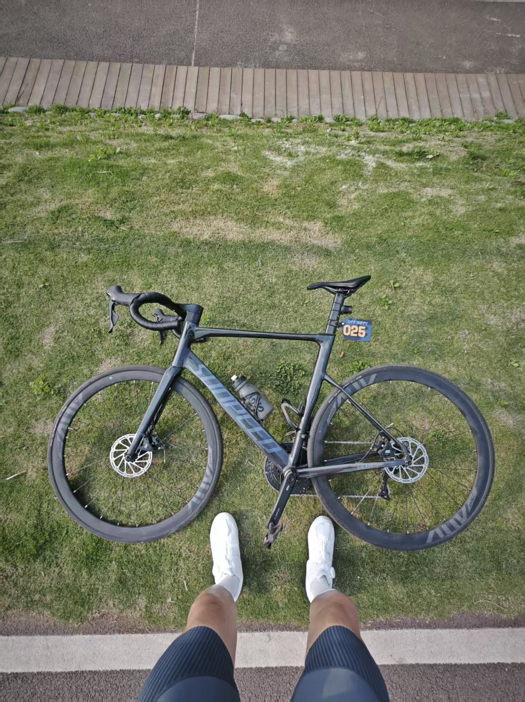

01
骑行服拍摄
Jersey Photos骑行服的图我拍得挺多的。之前买了件骑行服，出去骑车的时候顺手拍了照， 发在了商家的抖音评论区。
结果商家觉得我拍得挺好，直接免费送了两件骑行服， 唯一的要求就是——拍照就好了。哈哈哈哈。
所以现在衣柜里有两件不用花钱的骑行服。说好听点， 算是凭拍照当上了半个骑行服推广博主；说实在点，会拍照真的能省钱。

这里会显示你的骑行服照片
把图片放到 assets/photos/cycling-jersey.jpg 就行
骑行服的图我拍得挺多的。之前买了件骑行服，出去骑车的时候顺手拍了照， 发在了商家的抖音评论区。
结果商家觉得我拍得挺好，直接免费送了两件骑行服， 唯一的要求就是——拍照就好了。哈哈哈哈。
所以现在衣柜里有两件不用花钱的骑行服。说好听点， 算是凭拍照当上了半个骑行服推广博主；说实在点，会拍照真的能省钱。
这里会显示你的骑行服照片
把图片放到 assets/photos/cycling-jersey.jpg 就行

骑行照
assets/photos/cycling-1.jpg

骑行服
assets/photos/cycling-2.jpg

车和人
assets/photos/cycling-3.jpg